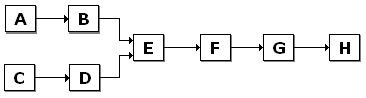

[The feature associated with this page, DirectShow, is a legacy feature. It has been superseded by MediaPlayer, IMFMediaEngine, and Audio/Video Capture in Media Foundation. Those features have been optimized for Windows 10 and Windows 11. Microsoft strongly recommends that new code use MediaPlayer, IMFMediaEngine and Audio/Video Capture in Media Foundation instead of DirectShow, when possible. Microsoft suggests that existing code that uses the legacy APIs be rewritten to use the new APIs if possible.]
A filter chain is a sequence of filters that meets the following conditions:
For example, in the following diagram, filters A–B, C–D, and F–G–H are filter chains. Each subchain in F–G–H (F–G and G–H) is also a filter chain. A filter chain can consist of a single filter, so filters A, B, C, D, F, G, and H are also distinct filter chains. Filter E has two input connections, so any sequence of filters that includes filter E is not a filter chain.

The IFilterChain interface provides the following methods for controlling filter chains:
| Label | Value |
|---|---|
| IFilterChain::StartChain | Starts a chain. |
| IFilterChain::StopChain | Stops a chain. |
| IFilterChain::PauseChain | Pauses a chain. |
| IFilterChain::RemoveChain | Removes a chain from the graph. |
Â
There is no specific method for adding a chain. To add a chain, insert the new filters using the IFilterGraph::AddFilter method. Then connect the filters by calling IGraphBuilder::Connect, IGraphBuilder::Render, or similar methods.
When the graph is running, a filter chain can switch between running and stopped. When the graph is paused, it can switch between paused and stopped. These are the only state transitions possible with filter chains.
When you use IFilterChain methods, it is important to make sure that the filters in the graph can support filter chaining operations. Otherwise, you might cause deadlocks or graph errors. Filters connected to the chain must function correctly after the chain changes state.
The best way to use IFilterChain is with a set of filters that you have designed specifically for chaining. Use the following guidelines to ensure that your filters are safe for filter chain operations. These points refer to the following diagram.
For example, in the previous diagram, filter B must complete any data processing calls from filter A, and filter E must finish any calls from filter D. If the pins expose the IPinFlowControl and IPinConnection interfaces, you can push the data through the graph by calling the IPinFlowControl::Block and IGraphConfig::PushThroughData methods, as described in Dynamic Reconnection. Filters might also support private methods for pushing the data.
Â
Â